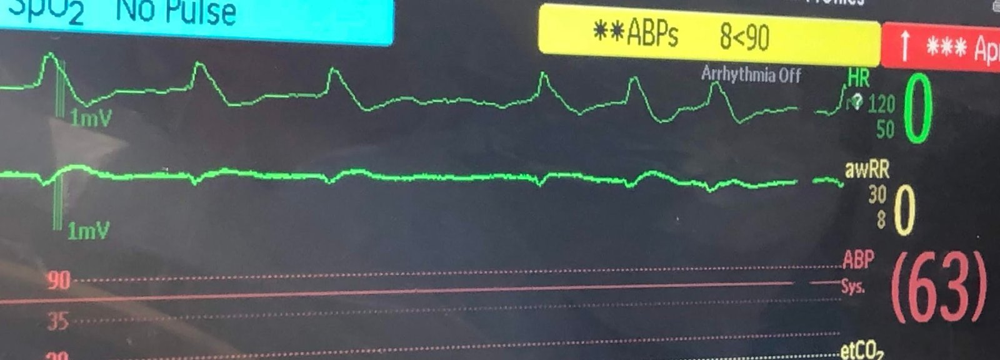
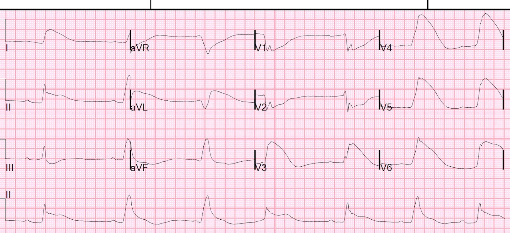
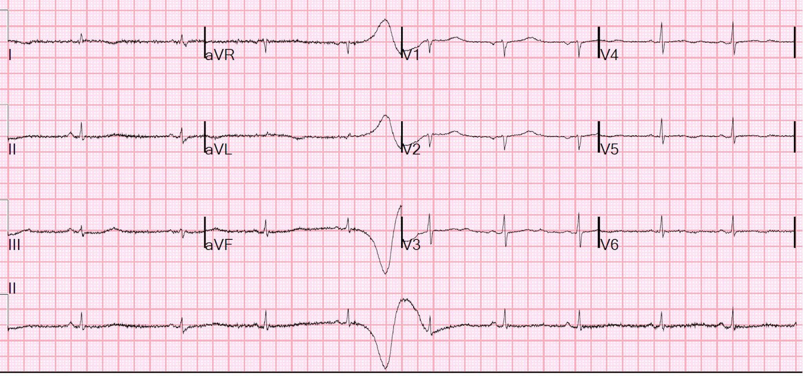
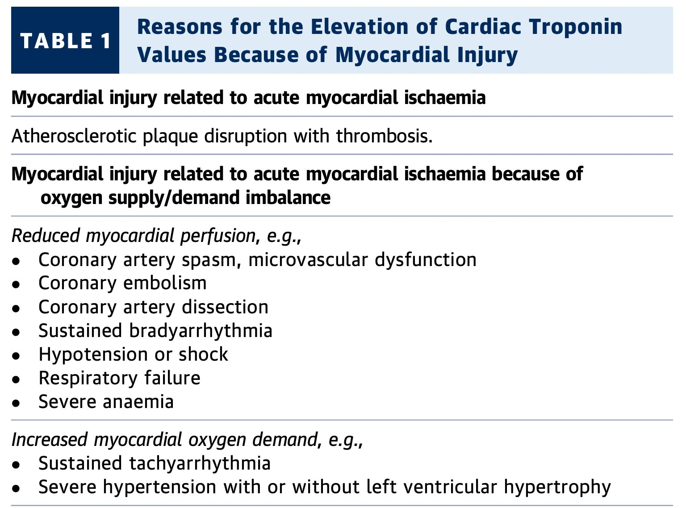
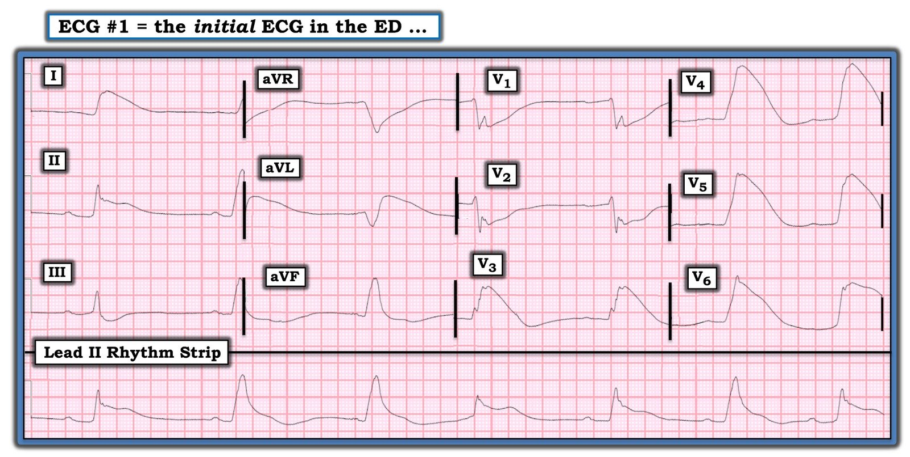
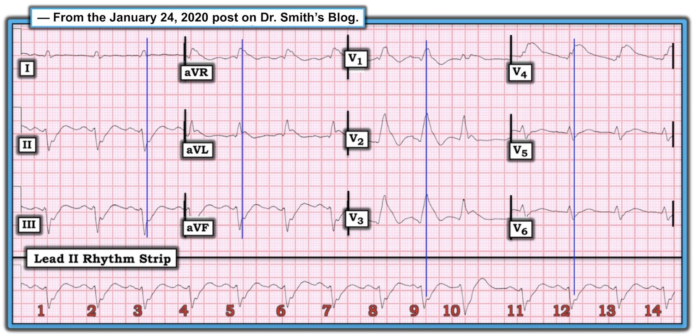
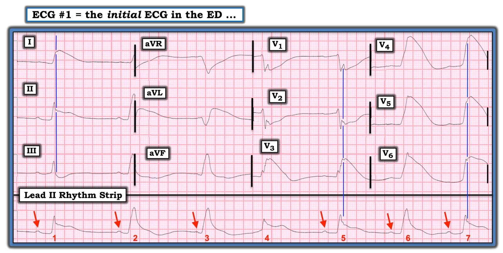

19/05/2020 — 1 giờ hồi sinh tim phổi, rồi tuần hoàn ECMO, rồi khử rung thành công….
Bản dịch tiếng Việt của bài "1 hour of CPR, then ECMO circulation, then successful defibrillation…." – Dr. Smith’s ECG Blog. Giữ nguyên toàn bộ 9 hình ảnh của bản gốc.
Một phụ nữ lớn tuổi đột ngột bị rung thất.
Không thể khử rung thành công cho bà, nhưng bà đã được đặt ống thông và chạy ECMO ngay tại khoa cấp cứu của chúng tôi (ECLS – hỗ trợ sự sống ngoài cơ thể). Dòng ECMO đạt được sau khoảng 1 giờ hồi sinh tim phổi chất lượng cao.
Sau khi đã thiết lập được dòng ECMO tốt, bà được khử rung thành công.
Đây là nhịp trên monitor của bà:


Cũng lưu ý rằng huyết áp động mạch trung bình đo qua đường động mạch xâm lấn là 63 mmHg, nhưng không có dạng sóng (và SpO2 báo “không có mạch”), vì dòng chảy là liên tục khi chạy ECMO và chức năng thất trái lúc này cực kỳ kém, không thể tạo thêm hiệu áp.
Sau đó bà được ghi điện tâm đồ 12 chuyển đạo:


Có nhịp chậm xoang với một PVC. Có “hình thái vây cá mập (Shark Fin)”
Tôi nhìn thấy điện tâm đồ này và đã chắc chắn rằng đây sẽ là tắc LAD hoặc tắc thân chung động mạch vành trái, là nguyên nhân gây ngừng tim và là nguyên nhân của ST chênh lên rất rõ ở I, II, aVL và V3-V6, cùng ST chênh xuống ở III, V1 và V2.
Kali máu bình thường.
Đây là một ca khử rung khi đang chạy ECMO với hình ảnh gần như vây cá mập, do tắc LAD đoạn gần.
Chụp mạch vành cho thấy các động mạch vành bình thường.
Không xác định được nguyên nhân gây ngừng tim.
Troponin I tăng lên 44,1 ng/mL (tương đương hs-troponin I là 44.000 ng/L). Không có thêm lần xét nghiệm troponin nào nữa, nên chúng tôi không biết giá trị đỉnh. Đây là mức troponin I hầu như chỉ gặp trong STEMI. Trong ca này, sốc nặng kéo dài 1 giờ cũng sẽ gây ra mức độ nhồi máu tương tự.
Tôi nghi ngờ đây là nhồi máu cơ tim típ 2 do hạ huyết áp nặng kéo dài vì ngừng tim.
Một điện tâm đồ theo dõi được ghi 2 ngày sau đó:


Tim của bệnh nhân đã hồi phục đáng kể:
Siêu âm tim:
LVEF ước tính 32%, rối loạn vận động thành vùng mỏm kèm biến dạng thì tâm trương (phình thất trái), gợi ý nhồi máu cơ tim cũ.
Chưa chắc chắn liệu điều này thể hiện:
1. Một nhồi máu cơ tim cấp mới (MINOCA — xem bên dưới — là nguyên nhân gây ngừng tim), hoặc
2. Một nhồi máu cơ tim cấp típ 2 chồng lên một nhồi máu cơ tim cũ, mà sẹo của nó sẽ là ổ khởi phát của rung thất nguyên phát. Khi đó, nhồi máu cơ tim típ 2 sẽ là hậu quả của tình trạng sốc nặng kéo dài trong lúc ngừng tim.
Vậy đây hoặc là một ca MINOCA, hoặc là một ca STEMI típ II.
1. Nếu ngừng tim được gây ra bởi nhồi máu cơ tim cấp do nứt vỡ mảng xơ vữa, thì chẩn đoán là MINOCA.
2. Nếu ngừng tim có nguyên nhân khác (chẳng hạn sẹo cũ), và ST chênh lên là do sốc nặng, thì đó là STEMI típ II.
Tôi tin rằng khả năng thứ hai (STEMI típ II) là nhiều khả năng nhất.
(MINOCA: nhồi máu cơ tim khi không có bệnh động mạch vành tắc nghẽn — Myocardial Infarction in the Absence of Obstructive Coronary Artery Disease).
MINOCA là gì?
Đây là bình luận của tôi về MINOCA:
“Bệnh mạch vành không tắc nghẽn” không nhất thiết có nghĩa là “không có nứt vỡ mảng xơ vữa kèm huyết khối.” Nhiều mảng xơ vữa không gây tắc nghẽn vẫn có thể nứt, hình thành huyết khối, gây tắc hoặc gần tắc, rồi tự tiêu huyết khối (autolysis — huyết khối tự ly giải kèm tái tưới máu) và chỉ còn hẹp dưới 50% khi chụp mạch vành. Thường thì chúng thậm chí không thể được nhận ra là thủ phạm, dưới dạng mảng xơ vữa bị nứt hay loét.
Nếu chụp mạch vành (vốn là một phép chụp lòng mạch — lumenogram) hoàn toàn không thấy bệnh mạch vành nào, thì khó có khả năng đã có một mảng xơ vữa bị nứt vỡ. Các cách để biết chắc chắn bao gồm siêu âm trong lòng mạch (để tìm mảng xơ vữa ngoài lòng mạch bị nứt vỡ) hoặc “chụp cắt lớp quang học” (optical coherence tomography), một kỹ thuật mà tôi hoàn toàn không quen thuộc.
Đây là đường link tới một tuyên bố khoa học về MINOCA (bản pdf toàn văn)
Dưới đây là các điểm chính cần rút ra từ bản tóm tắt này, như đã đăng trong bài viết này trên acc.org:
Chẩn đoán và xử trí bệnh nhân MINOCA
Sau đây là các điểm chính cần nhớ từ Tuyên bố Khoa học này của Hội Tim mạch Hoa Kỳ (American Heart Association) về chẩn đoán và xử trí nhồi máu cơ tim khi không có bệnh động mạch vành tắc nghẽn (MINOCA):
- MINOCA xảy ra ở 5-6% các ca nhồi máu cơ tim cấp (AMI) (khoảng được báo cáo từ 5-15%).
- Bệnh nhân MINOCA thường trẻ tuổi hơn, nhiều khả năng là nữ giới hơn và ít có rối loạn lipid máu hơn.
- Chẩn đoán MINOCA nên được đưa ra theo Định nghĩa toàn cầu lần thứ tư về nhồi máu cơ tim, khi không có bệnh động mạch vành (CAD) tắc nghẽn (không có tổn thương nào ≥50%).
- Chẩn đoán MINOCA cần loại trừ: 1) các nguyên nhân rõ ràng khác gây tăng troponin (ví dụ thuyên tắc phổi, nhiễm khuẩn huyết, v.v.), 2) bệnh mạch vành tắc nghẽn bị bỏ sót (ví dụ hẹp ở đoạn xa hoặc tắc các nhánh nhỏ), và 3) các nguyên nhân không do thiếu máu cục bộ gây tổn thương tế bào cơ tim (ví dụ viêm cơ tim).
- Bệnh mạch vành không tắc nghẽn trên chụp mạch vành cần được phân biệt giữa bệnh nhân có động mạch vành bình thường và bất thường lòng mạch tối thiểu (hẹp dưới 30%) với bệnh nhân có xơ vữa động mạch vành nhẹ đến trung bình (từ 30% đến dưới 50%). FFR có thể hữu ích. Hội chứng Takotsubo nên được xem xét riêng vì nó không được coi là nhồi máu cơ tim theo Định nghĩa toàn cầu lần thứ tư về nhồi máu cơ tim.
- Tổn thương mảng xơ vữa thường gặp trong MINOCA và bao gồm nứt vỡ mảng xơ vữa, mòn mảng xơ vữa và nốt vôi. Các tác giả khuyến nghị dùng chụp cắt lớp quang học hoặc siêu âm trong lòng mạch ở bệnh nhân có bằng chứng bệnh động mạch vành không tắc nghẽn trên chụp mạch vành.
- Co thắt mạch vành là một nguyên nhân thường gặp khác của MINOCA, được định nghĩa là co mạch >90% của một động mạch vành thượng tâm mạc dẫn đến suy giảm dòng máu mạch vành.
- Kỹ thuật tiêu chuẩn vàng để chẩn đoán co thắt mạch vành là bơm acetylcholine liều cao trong mạch vành, với đáp ứng được đánh giá bằng chụp mạch vành xâm lấn có cản quang.
- Rối loạn chức năng vi mạch vành có thể góp phần gây MINOCA và cần được nghiên cứu thêm.
- Huyết khối hoặc thuyên tắc mạch vành có thể gây MINOCA, có hoặc không kèm tình trạng tăng đông.
- Bóc tách động mạch vành tự phát (SCAD) nên được xem xét là một nguyên nhân của MINOCA.
- Xử trí MINOCA dựa trên bằng chứng hạn chế và chưa có thử nghiệm tiến cứu, ngẫu nhiên, có đối chứng nào. Các thuốc (aspirin, statin, thuốc chẹn beta, clopidogrel, thuốc ức chế men chuyển/thuốc chẹn thụ thể angiotensin) nên được cân nhắc dựa trên cơ chế nền gây MINOCA ở từng người. Nếu có bất kỳ bằng chứng nào của xơ vữa động mạch, các yếu tố nguy cơ CAD có thể thay đổi được cần được điều trị tích cực.
- Co thắt mạch vành được điều trị tốt nhất bằng thuốc chẹn kênh calci, còn lợi ích của nitrat tác dụng kéo dài thì kém rõ ràng hơn.
- Cần nghiên cứu thêm về MINOCA để xác định hiệu quả của các thuốc nhằm phòng ngừa thứ phát AMI.
Nhồi máu cơ tim típ 2 là gì?
Đó là tổn thương do thiếu máu cục bộ gây ra bởi mất cân bằng cung-cầu, KHÔNG phải do nứt vỡ mảng xơ vữa và huyết khối. Danh sách các tình trạng có thể gây ra điều này ở bên dưới.
Đây là một bài tổng quan tuyệt vời về nhồi máu cơ tim típ 2 (toàn văn, JACC) của cộng sự nghiên cứu của tôi, Yader Sanoval:
https://www.sciencedirect.com/science/article/pii/S0735109719305923 (bài tổng quan trên JACC về nhồi máu cơ tim do mất cân bằng cung-cầu)
Dưới đây là danh sách từ Định nghĩa toàn cầu lần thứ 4 về nhồi máu cơ tim (bản pdf toàn văn):
https://www.onlinejacc.org/content/accj/72/18/2231.full.pdf?download=true (Định nghĩa toàn cầu lần thứ tư về nhồi máu cơ tim — bản pdf toàn văn)



===================================
BÌNH LUẬN CỦA TÔI, bởi KEN GRAUER, MD (19/5/2020):
===================================
Thật vui khi được thấy những câu chuyện thành công như ca này, hồi phục sau hồi sức. Như Dr. Smith đã nêu — hình thái “Vây cá mập” (Shark Fin) đã được ghi nhận trên dải nhịp theo dõi ban đầu và trên điện tâm đồ 12 chuyển đạo ban đầu.
- Hình thái vây cá mập đã được bàn luận nhiều lần trên Dr. Smith’s ECG Blog (Để ôn lại — Xem bài ngày 11 tháng Sáu năm 2018 và bài ngày 24 tháng Một năm 2020, chỉ để kể ra 2 ví dụ).
Để rõ ràng — tôi sẽ trình bày lại điện tâm đồ ban đầu ghi tại khoa cấp cứu ở Hình 1.
- Giống như Dr. Smith — tôi cũng đã nghĩ thông tim sẽ cho thấy OMI cấp do tắc LAD hoặc thân chung động mạch vành trái, thay vì các động mạch vành bình thường.


LƯU Ý: Có một số dấu hiệu điện tâm đồ tinh tế trên điện tâm đồ #1.
- BẠN có nhìn thấy chúng không? NẾU chưa — Hãy xem lại Hình 1 một lần nữa.
BÌNH LUẬN: Tôi xin nhấn mạnh rằng những chi tiết tinh tế sau đây khi đọc bản ghi ở Hình 1 không làm thay đổi xử trí — và tất cả đều đã hết vào thời điểm ghi bản ghi theo dõi 2 ngày sau đó. Nhưng tôi thấy những điểm này thú vị — và tôi hy vọng chúng giúp rèn giũa kỹ năng đọc điện tâm đồ của bạn.
- Thử thách thứ 1 khi đọc một bản ghi có hình thái vây cá mập — là xác định điểm J, điểm phân tách phần cuối phức bộ QRS với phần đầu đoạn ST. Như Drs. Meyers & Smith vẫn thường nói — “Khi QRS rộng, điểm J sẽ ẩn mình. Vì vậy, bước tiếp theo của bạn là Dóng nó xuống, rồi Chép nó sang.”
- Để minh họa quá trình này — tôi đã đưa lại ở Hình 2 điện tâm đồ ban đầu từ bài ngày 24 tháng Một năm 2020 (đường link tới bài đó đã cho ở trên). Lưu ý rằng nhịp ở Hình 2 là nhịp xoang với một PVC ( = nhát #10) — và, có blốc hai phân nhánh (RBBB/LAHB), như thường gặp khi tắc LAD đoạn gần, vốn đã được phát hiện khi thông tim. Vị trí điểm J dễ thấy nhất ở các chuyển đạo chi. Tôi đã dóng điểm này xuống ở Hình 2 bằng các đường thẳng đứng màu XANH, cho thấy ST chênh lên rất rõ ở các chuyển đạo trước tim.


Hãy quay lại Hình 1.
- TẠI SAO việc xác định điểm J trên điện tâm đồ của ca này lại khó hơn?
TRẢ LỜI: Dùng dải nhịp dài chuyển đạo II ở phía dưới Hình 1 sẽ thấy hình thái QRS của 7 nhát trên bản ghi này không đồng nhất — và đây là lý do khó xác định điểm J hơn. Tôi minh họa các dấu hiệu điện tâm đồ tinh tế bổ sung mà tôi đã nhắc đến trước đó đối với điện tâm đồ #1 ở Hình 3:
- Sóng P có hiện diện trên dải nhịp dài chuyển đạo II ở Hình 3 (các mũi tên ĐỎ). Lưu ý rằng khoảng PR không giữ nguyên với mỗi nhát trong 7 nhát trên dải nhịp chuyển đạo II này. Tuy nhiên, khoảng PR quả thật vẫn giữ nguyên (dù kéo dài đến ~0,32 giây) đối với các nhát #1, 5 và 7 — điều này cho biết các nhát #1, 5 và 7 là những nhát được dẫn truyền kèm blốc AV độ 1.
- Phức bộ QRS của 3 nhát này ( = các nhát #1, 5, 7) được dẫn truyền kèm blốc AV độ 1 trông hẹp hơn, với điểm kết thúc QRS rõ ràng hơn — so với các phức bộ QRST vô định hình hơn của các nhát #2, 3 và 6. Không có sóng P nào đi trước nhát #4.
- Lưu ý rằng khoảng PR đi trước các nhát #2, 3 và 6 rõ ràng ngắn hơn khoảng PR của 3 nhát được dẫn truyền kèm blốc AV độ 1. Xem kỹ hơn — khoảng PR đi trước nhát #3 ngắn hơn khoảng PR đi trước các nhát #2 và #6.
- ĐIỂM THEN CHỐT (PEARL): Theo kinh nghiệm của tôi, các nhịp tim quan sát được trong lúc (hoặc ngay sau) ngừng tim không tuân theo các quy luật thông thường của blốc AV và nhịp thoát. Trong các tình huống không ngừng tim — các nhát thoát và nhịp thoát có xu hướng ít nhất là khá đều. Đây là một khái niệm cực kỳ hữu ích cần nắm — bởi vì nhận ra một nhát xuất hiện sớm hơn dự kiến (tức là sớm hơn các nhát thoát khác trên bản ghi) — thường là một manh mối tuyệt vời cho thấy nhát này là nhát được dẫn truyền. Dù vậy, khoảng R-R của 7 nhát trên dải nhịp chuyển đạo II ở Hình 3 thay đổi theo một cách mà với tôi là bất chấp logic.
- ĐIỀU CỐT LÕI: Các nhát #1, 5 và 7 ở Hình 3 được dẫn truyền kèm blốc AV độ 1. Các đường thẳng đứng màu XANH trên hình này xác định điểm J, và cho thấy ST chênh lên rất rõ ở các chuyển đạo trước-bên. Tôi không biết nhát #4 là gì (tức là không có sóng P nào đi trước nhát này). Tôi không chắc liệu các nhát #2, 3 và 6 là nhát hỗn hợp — hay đây là các nhát thoát thất đi sau những sóng P không dẫn truyền (hoặc là sự kết hợp của các khả năng này). Dù thế nào, ST chênh lên rất rõ được thấy ở các chuyển đạo trước-bên của tất cả các nhát (được dẫn truyền và/hoặc nhát thoát) trên bản ghi này. Và, kết quả thông tim cho thấy các động mạch vành bình thường — với điện tâm đồ theo dõi ghi 2 ngày sau đó cho thấy cơ chế nhịp xoang, kèm hồi phục hoàn toàn của mọi ST chênh lên.


Xin CẢM ƠN Dr. Smith đã trình bày ca bệnh hấp dẫn này với một kết cục may mắn là tốt đẹp.